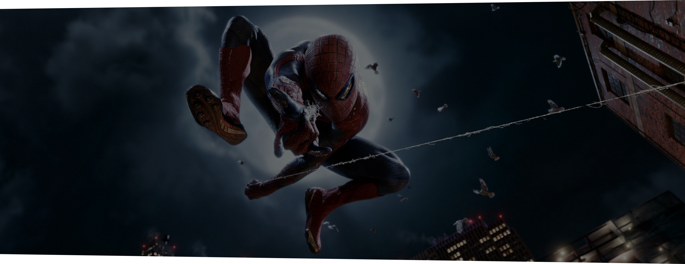
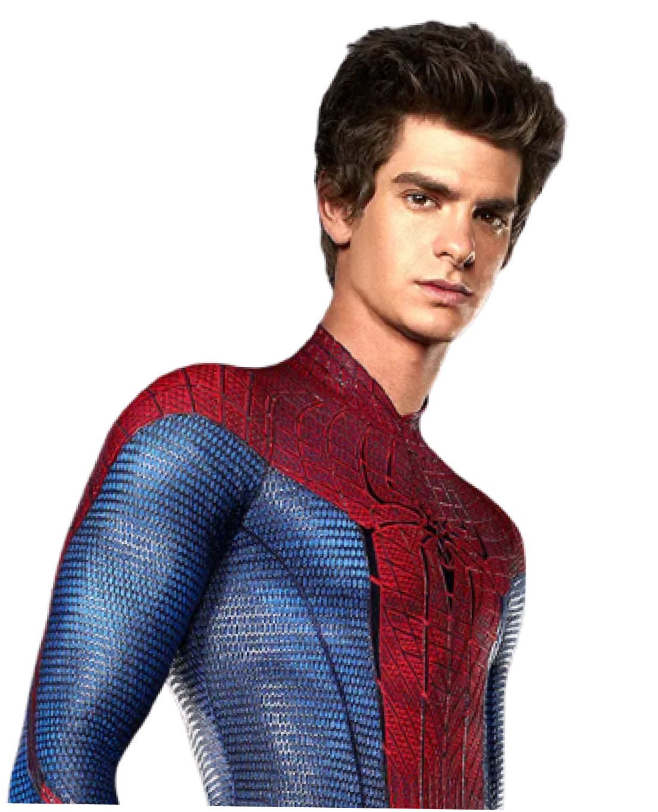
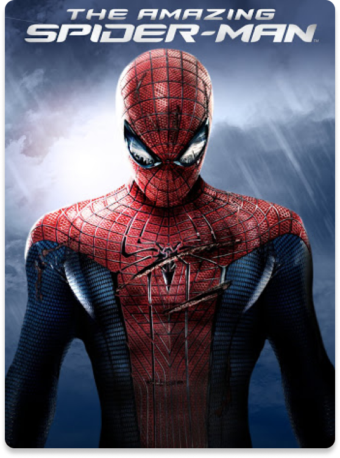

Spider-Man is a superhero with spider-like abilities, such as wall-crawling, web-slinging, and heightened senses known as "Spider-Sense." He is a relatable hero balancing his teenage life with his responsibilities to protect others. His famous motto is, "With great power comes great responsibility."

 The Amazing
The Amazing
Spider Man 2

Andrew Garfield
Andrew brought a modern, introspective take to Spider-Man, highlighting Peter’s intelligence, struggles with identity, and the poignant love story with Gwen Stacy.

The Amazing
Spider Man
Spider Man
The Amazing Spider Man 2
Spider Man
No Way Home
No Way Home